SURGE Electric Motorcycles – CBR600RR Electric Conversion (In Progress)
Close ✕
2025 - Present
What It Is
An ongoing project to convert a 2003 Honda CBR600RR into a fully electric motorcycle. The build serves as SURGE’s first step toward a competitive electric superbike platform, targeting ~25 kW peak output from a custom-designed lithium-ion battery system and integrated powertrain.
Where It’s Going
- A larger-capacity, higher-discharge pack with greater modularity, control, and cooling strategies.
- Subframe redesign for manufacturability and structural efficiency.
- A complete running prototype targeted for the 2025–26 season.
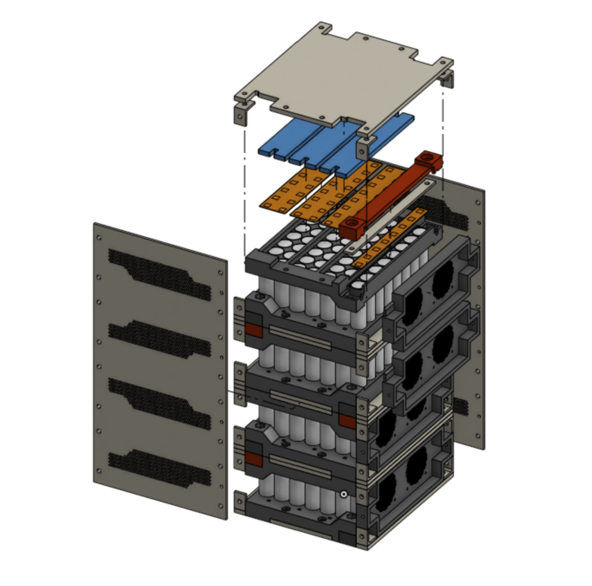
My Role
I joined the team at the start of 2025, drove the process of getting things started, contributed across multiple areas of the build, and eventually took on engineering leadership by helping establish strong technical workflows and bringing together a committed group of people.
Chassis & Drivetrain Integration
- Designed a subframe structure to replace the internal combustion engine and drivetrain with electric components.
- Prototyped and manufactured mounting systems using waterjet-cut plates, 3D printing, and other shop processes to validate fitment.
Battery Pack Design
- Designed and built 26s4p Molicel P42A pack (~1.6 kWh) with careful busbar sizing and interconnects.
- Researched BMS requirements and evaluated busbar conductance to guide materials and geometry.
Technical Research & System Decisions
- Investigated motor/controller options and implications on packaging and cooling.
- Established design criteria for capacity, voltage, and continuous vs. peak performance.
- Documented lessons to inform the next bike’s upscaled battery and improved chassis design.
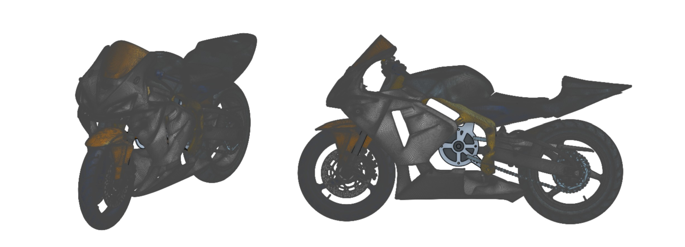
Skills
- Mechanical Design & Fabrication: SolidWorks, Onshape, 3D printing, waterjet cutting, laser cutting, prototyping, subframe design
- Energy Systems: Lithium-ion battery pack design, busbar sizing & interconnect design, spot welding, BMS research & integration planning, thermal considerations
- Systems Integration: Drivetrain alignment, packaging analysis, cooling tradeoffs, chassis modification for EV components
- Engineering Practices: Cross-team collaboration, design reviews, scope definition, documentation for iteration and scaling
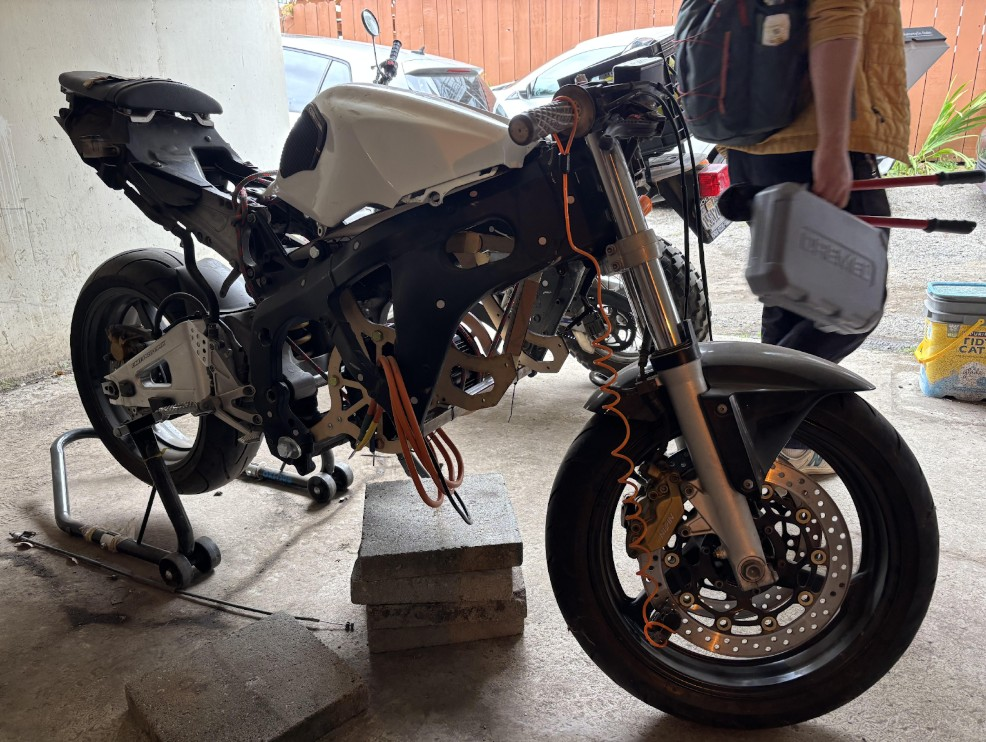
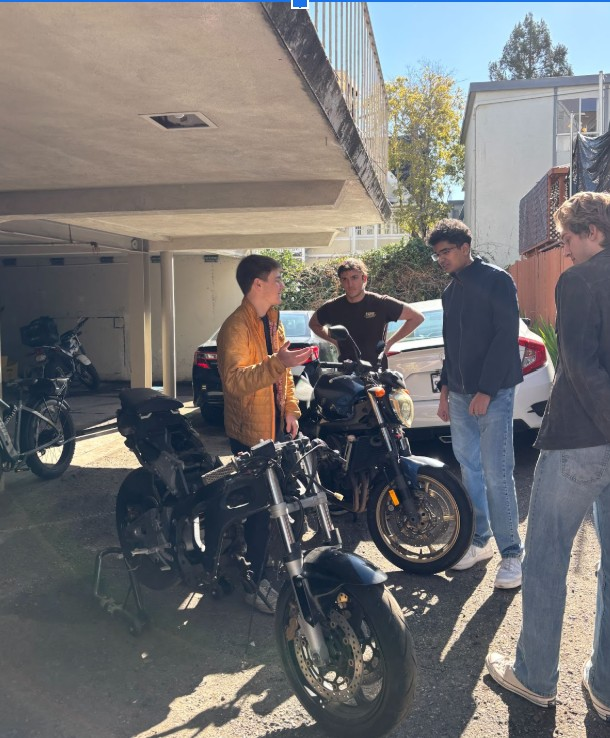
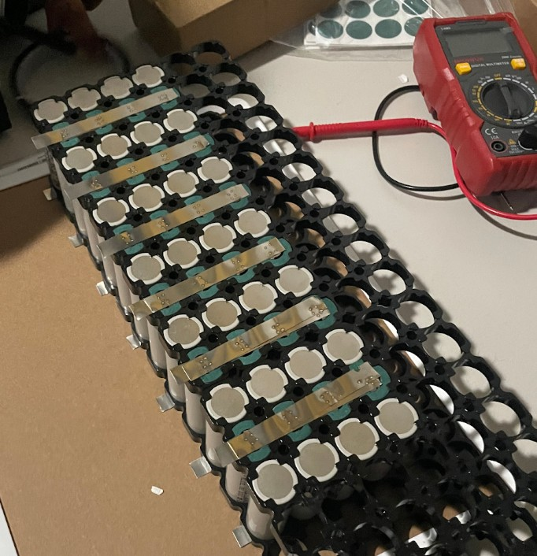
Los Altos Festival of Lights — Float Engineering Program
Close ✕
2021 - 2023
What It Is
A community program that brought students into the Festival of Lights Parade to maintain and improve decades-old holiday floats.
What began as simple maintenance grew into a program where I helped design and implement a reusable control and power system that
modernized floats and scaled across the parade.
Process
As students working on the floats, we realized the opportunity we had to do more than just maintenance. I contributed to developing a
Raspberry Pi–based control system that allowed lights, pneumatics, servos, and sound to be programmed and synchronized into sequences,
paired with battery-based power systems to replace gas generators.
As the program grew, I became more involved in helping new members apply these systems. The architecture we created was adopted as the
standard approach and continues to be implemented on floats beyond the ones I directly worked on. Along the way, I also got hands-on
experience with float mechanics, from designing a stepper motor–driven carousel to wrenching on old car chassis.
Technical Work
- Co-developed a Raspberry Pi–based programmable control system for coordinated float animations.
- Designed and implemented battery-powered systems to replace gas generators across multiple floats.
- Helped scale adoption of these systems, which are still being implemented on floats today.
- Contributed mechanical redesigns such as a stepper motor–driven carousel system.
- Maintained and repaired legacy float chassis, including old car frames and drivetrains.
Skills & Tools
- Embedded systems: Raspberry Pi, relays, servos, motor controllers
- Power systems: battery integration, generator replacement, efficiency improvements
- Mechanical systems: stepper motors, pulleys, 3D printing, general fabrication
- Automotive basics: experience working on old car chassis and float structures
- Teamwork & Leadership: worked with peers to grow the program, supported new contributors, and documented systems for reuse
Berkeley Formula Racing — Brakes & Driver Interface Engineer
Close ✕
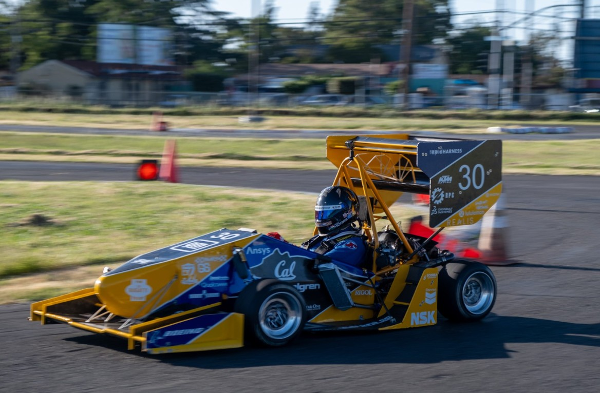
2023 - 2024
What It Is
UC Berkeley’s Formula SAE team designs and builds a formula-style racecar each year to compete in international student engineering competitions.
I contributed as part of the Brakes and Driver Interface subteam.
Process
My work included supporting MATLAB simulations for brake forces and vehicle dynamics, assisting with a carbon-fiber seat mold, and designing chassis
mounting tabs for seat integration and related components. Although my direct involvement was limited, the experience gave me a clearer understanding
of how the different technical subsystems come together in a racecar project. It also highlighted how leadership and team culture impact engineering outcomes,
motivating me to prioritize better practices and team structures in my later projects.
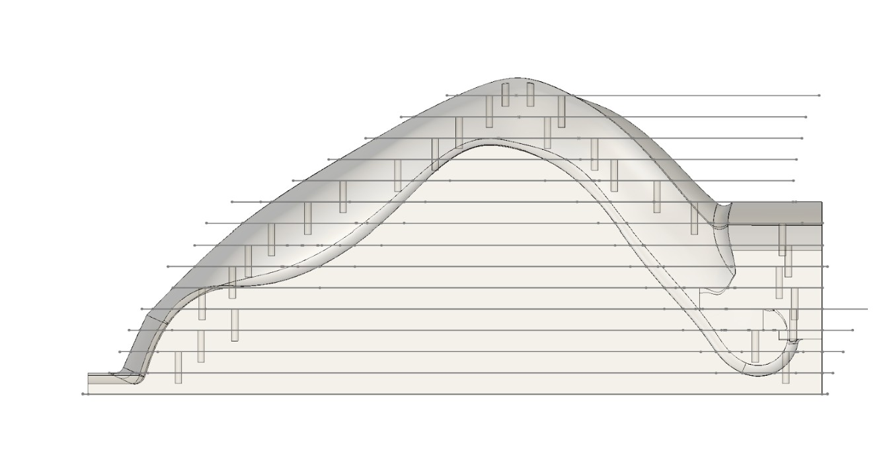
Technical Work
- Contributed to MATLAB-based brake force and vehicle dynamics simulations.
- Assisted in mold construction for a carbon-fiber driver seat.
- Designed chassis mounting tabs for seat and related component integration.
Skills & Tools
- MATLAB scripting: engineering simulations
- CAD design: chassis integration components
- Composite fabrication: carbon-fiber layup
- Project experience: exposure to large-scale engineering projects and team culture
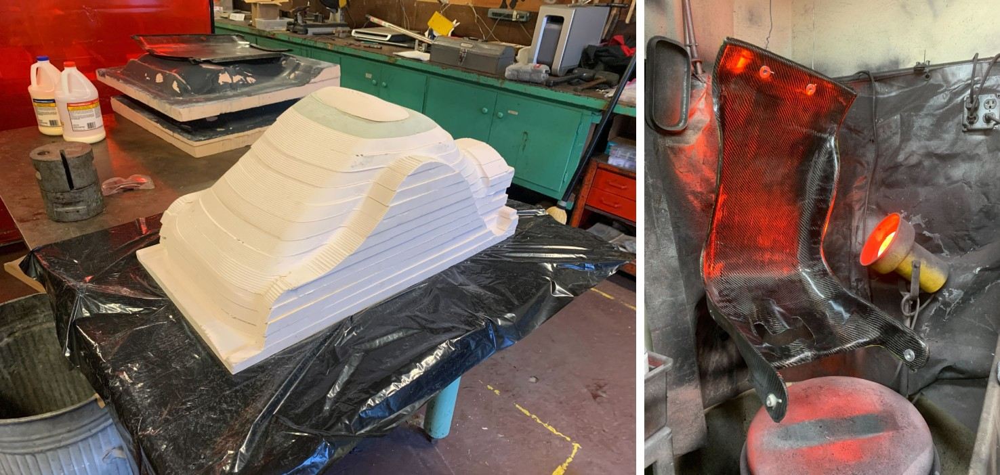
Lower Limb Exoskeleton Research – San José State University
Close ✕
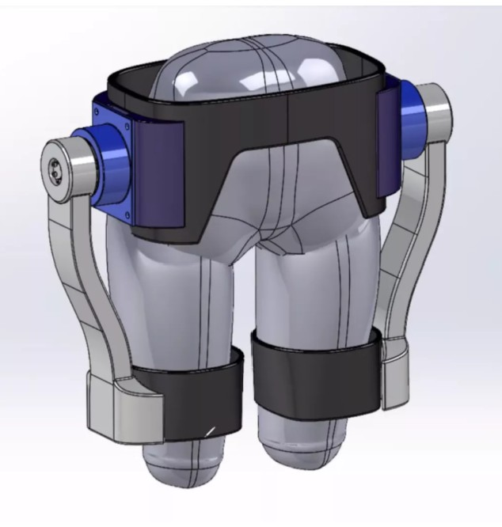
What It Is
A faculty-led project at San Jose State University to explore fully 3D-printed lower-limb exoskeleton designs for assistive robotics.
I joined the research team as a high school student, supporting both mechanical and embedded tasks.
Process
Wanting to learn more about engineering research, I reached out to professors and was given the chance to spend a summer working with a team of undergraduate and graduate students.
Most of my role was supporting ongoing work: I helped evaluate 3D printing methods and materials, ran test prints, and contributed to design efforts on the hip subassembly.
On the electronics side, I programmed an ESP32 to communicate with motors and sensors using I²C and CAN bus, gaining early exposure to embedded systems.
The project was still in development when I left, but the experience gave me valuable hands-on learning and an introduction to academic robotics research.
Technical Work
- Assisted CAD design and prototyping for the hip subassembly.
- Researched and tested 3D printing methods and materials.
- Programmed ESP32 modules for motor/sensor communication via I²C and CAN bus.
- Collaborated with a team of undergrad and graduate researchers in a lab setting.
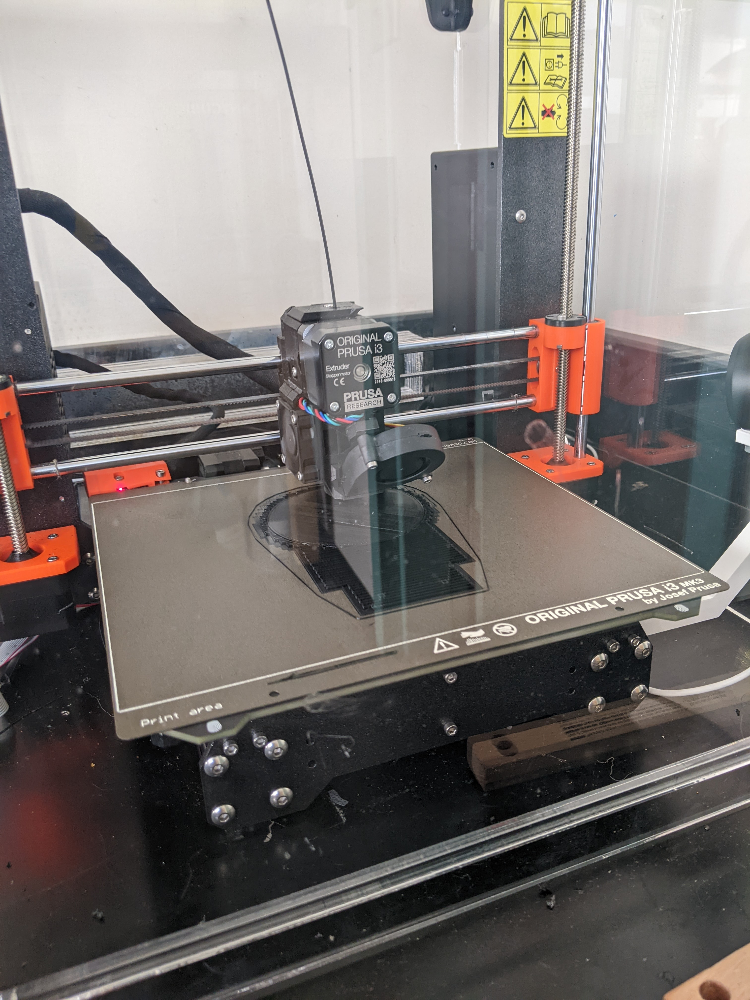
Skills & Tools
- CAD: SolidWorks, 3D printing, prototyping
- Embedded: ESP32 programming, I²C and CAN bus communication
- Research experience: interdisciplinary robotics research and lab teamwork
Autonomous Rover – Waypoint Navigation With Ardupilot
Close ✕
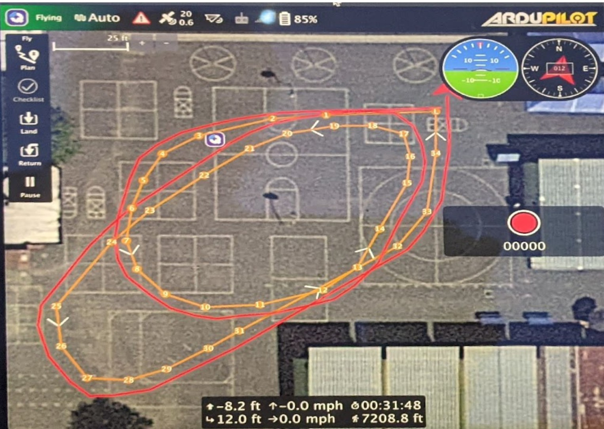
2021
What It Is
A GPS-guided autonomous rover built by converting a standard RC car into a ground vehicle running ArduPilot.
The system used a flight controller, GPS module, and power management circuitry to achieve waypoint-based
navigation similar to drones.
Process
I started with a basic RC chassis and systematically replaced the control hardware with an ArduPilot-compatible board.
I added a GPS module, soldered in a power distribution module (APC), and configured the firmware for ground vehicle
dynamics. The project required wiring, soldering, and sensor calibration to integrate all components, followed by
tuning and testing ArduPilot’s navigation stack for stable waypoint following.
Technical Work
- Installed and configured an ArduPilot flight controller on an RC car platform.
- Researched and implemented power distribution system for controllers and motors.
- Performed soldering, sensor calibration, and firmware setup for waypoint navigation.
Skills & Tools
- Embedded Systems & Control: ArduPilot setup, ground vehicle tuning, waypoint navigation
- Electronics & Wiring: Power distribution design, soldering, GPS/IMU integration
- Systems Integration: Chassis modification, module packaging, calibration workflow
- Hands-On Engineering: Prototyping, debugging, end-to-end system assembly
Autonomous Hexacopter — UAV Design and Testing
Close ✕

2023
What It Is
A school project that I expanded into a fully functional autonomous hexacopter. The drone ran ArduPilot firmware with GPS-based navigation, offering flight modes like position hold, stabilization, and waypoint following.
Process
I designed a hexacopter frame in CAD and laser-cut it from wood and plastic. The first version was too weak and failed during early flight tests, so I revised the design and rebuilt the frame to handle flight stresses more reliably. I reused many of the electronics from my earlier autonomous rover, including the ArduPilot controller, GPS, and power modules, which let me focus on the mechanical design and flight setup. Building and iterating on this project gave me hands-on exposure to UAV assembly, structural design tradeoffs, and tuning autonomous flight systems.
Technical Work
- Designed and laser-cut a custom hexacopter frame, revised after crash testing for greater strength.
- Repurposed electronics from a previous rover project, including ArduPilot flight controller and GPS.
- Configured flight firmware for position hold, stabilization, and waypoint navigation.
- Calibrated GPS/IMU sensors and tuned flight performance.
Skills & Tools
- CAD design, laser cutting, iterative prototyping
- UAV assembly, flight testing, and tuning
- ArduPilot configuration and sensor calibration
- Practical experience with failure, redesign, and testing
MK6 GTI Rear Strut Brace — Chassis Reinforcement (In Progress)
Close ✕
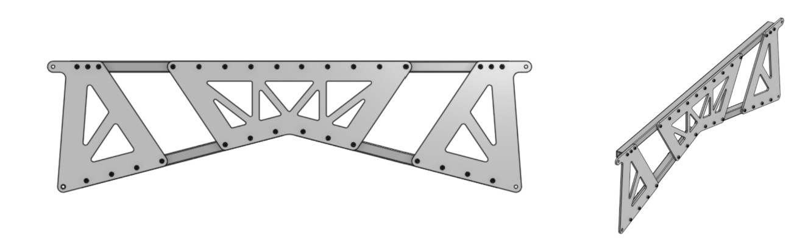
2025
What It Is
Custom upper rear strut brace for a VW MK6 GTI, designed to tie the rear pillars behind the seats
for added stiffness and improved handling.
Process
Measured rear geometry, validated fit with a laser-cut wooden prototype, and fabricated the final
brace from metal using waterjet cutting. Pending installation and testing.
Technical Work
- CAD design for chassis reinforcement.
- Prototype validation with laser cutting.
- Final fabrication with waterjet cutting.
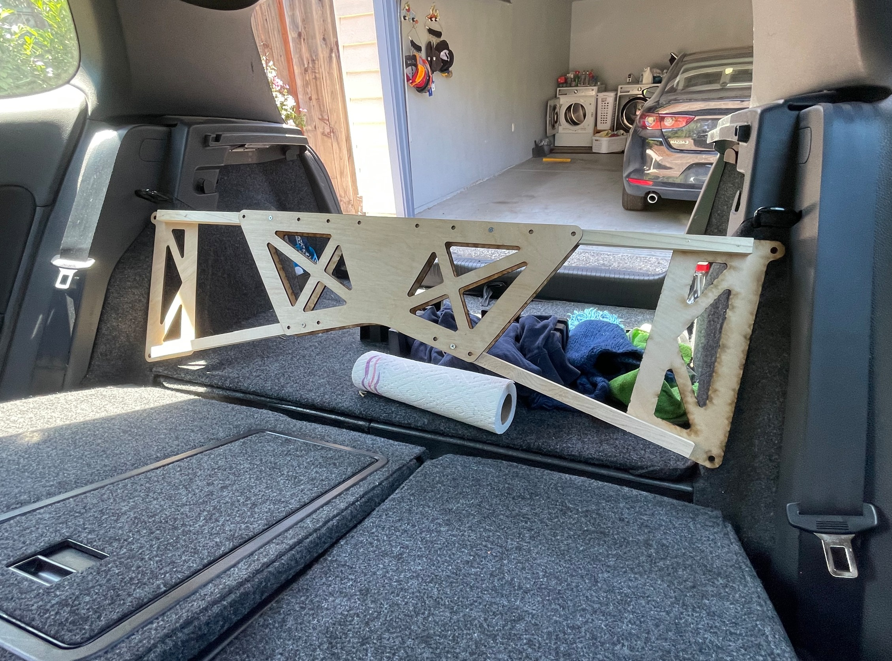
Sleep Breath Tracker — Arduino-Based Airflow Monitoring
Close ✕
2022
What It Is
A custom device designed to monitor and log breathing airflow during sleep, built for a family member
with sleep-related disorders. The system used a pressure sensor and microcontroller to record airflow
patterns overnight for later analysis.
Process
I started with a breadboard prototype using an Arduino and a pressure sensor to capture airflow data
through a nasal cannula. Once the basic system was working, I implemented filtering and logging so the
data could be stored and reviewed. To make it more practical, I transitioned from the breadboard to a
custom PCB designed in Autodesk Eagle, creating a compact, single-piece device that could be used
outside of a lab setting.
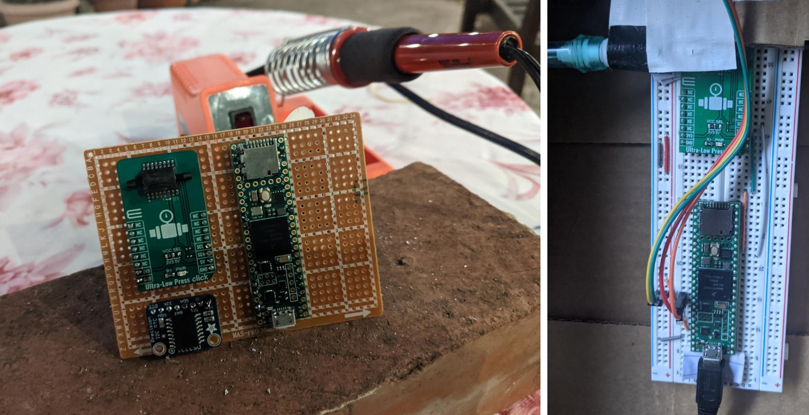
Technical Work
- Prototyped a sleep airflow monitoring system with Arduino and a pressure sensor.
- Implemented basic filtering and data logging to capture overnight breathing data.
- Designed a custom PCB in Autodesk Eagle to replace the breadboard prototype.
- Assembled and tested the final PCB-based system as a portable, usable tool.
Skills & Tools
- Arduino programming, sensor integration, signal filtering, data logging
- Electronics prototyping (breadboarding, wiring, testing)
- PCB design in Autodesk Eagle, PCB assembly and validation
Electric Skateboards – First “Real” Engineering Projects
Close ✕
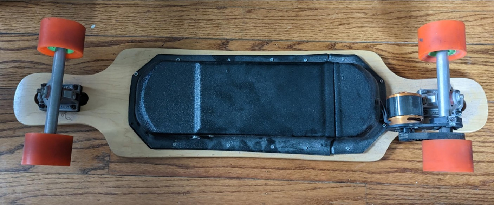
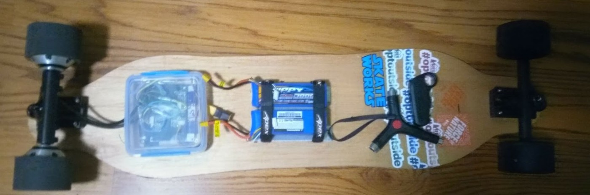
2017 - 2019
What It Is
A set of DIY electric skateboards that became my first real engineering projects and sparked my
interest in electric vehicles.
Process
I started by building a deck with my neighbor, ordering hub motors, a controller, and batteries
from eBay, and rigging everything together in a Tupperware enclosure to make a working electric
skateboard. After that first success, I wanted to push further and built a belt-drive board using
a store-bought deck and enclosure. This time I integrated a VESC motor controller — the same
architecture I would later use in larger EV projects like my motorcycle conversion. These projects
taught me the basics of batteries, controllers, wiring, and mechanical packaging, while also giving
me the excitement of riding something I built myself.
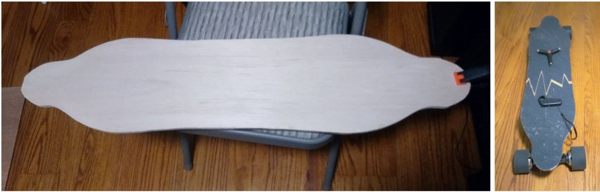
Technical Work
- Built a hub-motor electric skateboard using off-the-shelf motors, batteries, and controllers.
- Fabricated an enclosure from simple materials to house electronics and wiring.
- Designed and assembled a belt-drive electric skateboard with a VESC-based control system.
- Learned fundamentals of EV architecture, including battery pack assembly, motor control, and drivetrain tradeoffs.
Skills & Tools
- Electronics assembly and wiring, battery and controller integration
- Hands-on fabrication and packaging of mechanical/electrical systems
- Early experience with VESC motor controllers (applied later in motorcycle project)
- Self-directed prototyping and iterative design